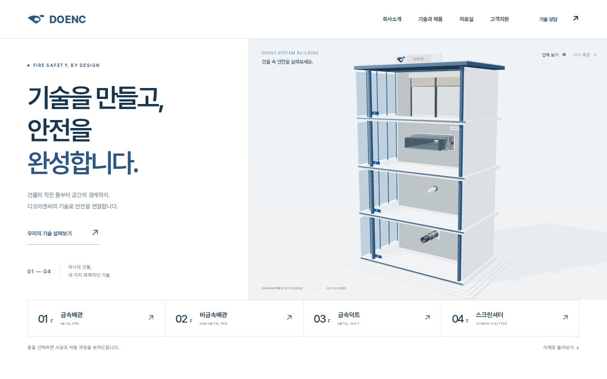
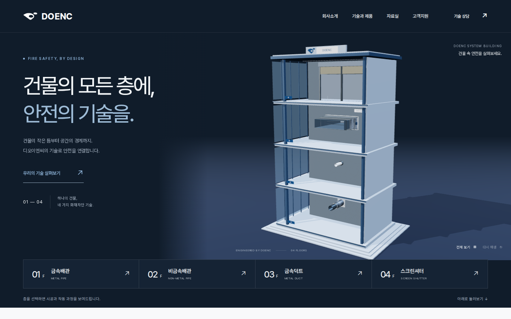
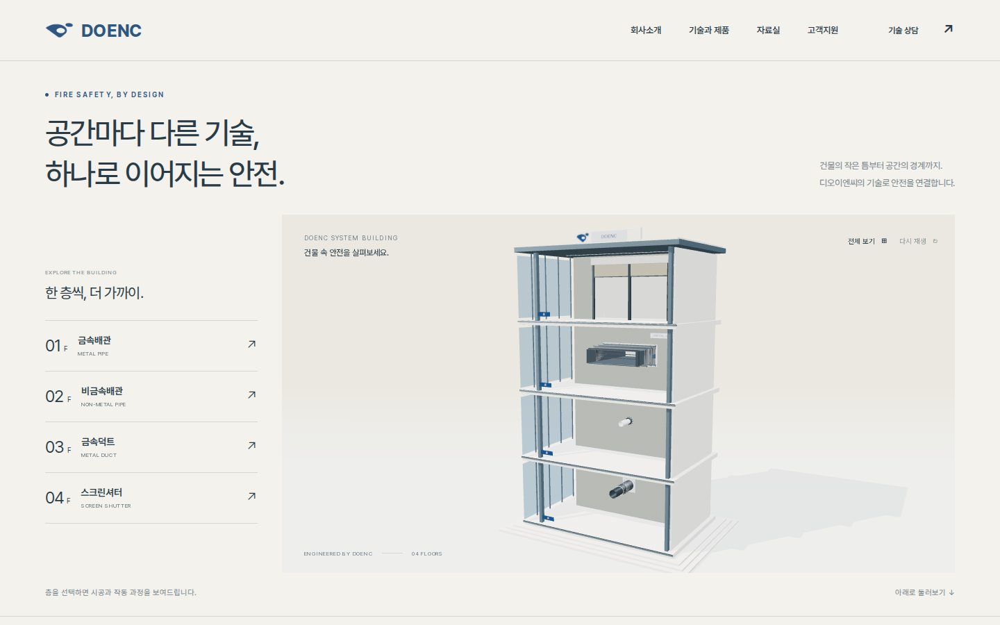

 A클린 블루CLEAR & CONFIDENT큰 문구와 모형이 좌우로 균형을 이루는 구성.밝은 여백, 부드러운 그림자, 절제된 회사 블루로 정돈된 기술기업의 인상을 만듭니다.느낌 · 명료함 / 신뢰 / 균형배치 · 좌우 분할 + 가로형 층 선택시안 체험하기 ↗이미지 크게 보기
 B딥 네이비A STAGE FOR ENGINEERING깊은 네이비 공간에 모형을 크게 드러내는 구성.조명과 재질의 대비를 강조해, 건물 자체가 첫 화면의 중심이 됩니다.느낌 · 집중 / 기술력 / 강한 인상배치 · 하나의 넓은 무대 + 하단 선택 메뉴시안 체험하기 ↗이미지 크게 보기
 C아키텍처 갤러리QUIETLY PRECISE건축 모형을 전시하듯 여유 있게 보여주는 구성.따뜻한 회백색과 얇은 선, 왼쪽의 세로형 층 선택으로 차분한 전문성을 표현합니다.느낌 · 절제 / 건축 / 차분한 고급감배치 · 상단 큰 문구 + 세로형 층 선택시안 체험하기 ↗이미지 크게 보기